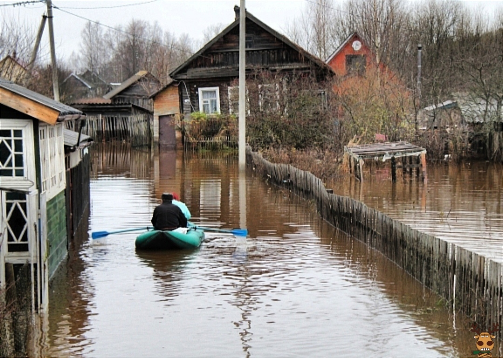
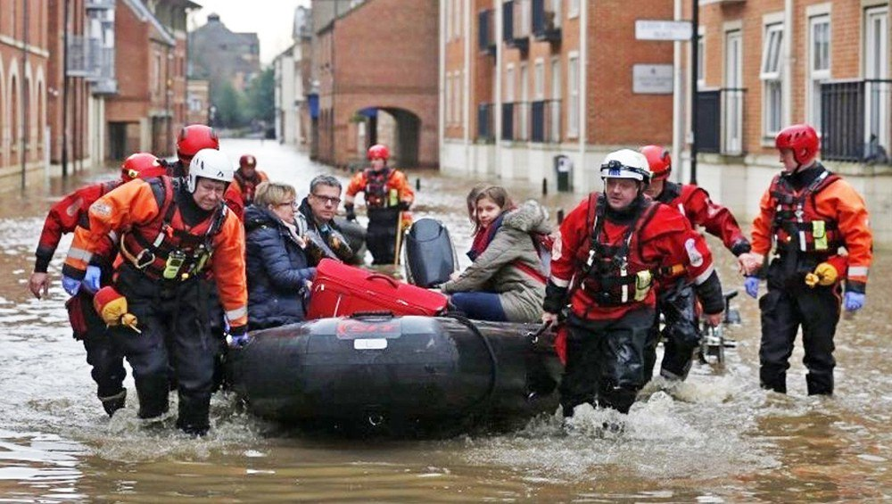
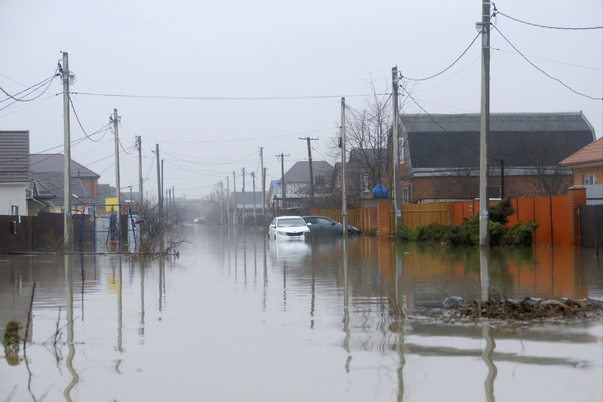

Наводнения можно прогнозировать, а значит, принять предупредительные меры. На официально сайте Главного управления МЧС России размещена следующая информация о действиях при наводнении. С получением прогноза о возможном наводнении осуществляется оповещение населения с помощью сирен, через сеть радио- и телевизионного вещания, другими возможными средствами.
Получив предупреждение об угрозе наводнения (затопления), необходимо сообщить об этом близким, соседям, оказать помощь престарелым и больным. Обратить внимание на информацию, где будет сообщено о времени и границах затопления, рекомендации жителям о целесообразном поведении и порядке эвакуации.
Перед эвакуацией для сохранения своего дома следует:
• отключить воду, газ, электричество;
• погасить огонь в печах;
• перенести на верхние этажи (чердаки) зданий ценные вещи и имущество;
• закрыть окна и двери, при необходимости забить окна и двери первых этажей досками или фанерой.
При получении сигнала о начале эвакуации необходимо быстро собрать и взять особой:
• документы (в герметичной упаковке), ценности, лекарства;
• комплект одежды и обуви по сезону;
• запас продуктов питания на несколько дней, затем следовать на объявленный эвакуационный пункт для отправки в безопасные районы.
При внезапном наводнении до прибытия помощи
необходимо как можно быстрее:
1. Если затопление в селе или частном секторе, отогнать скот в безопасные места, отдаленные от зоны затопления.
2. Занять ближайшее безопасное возвышенное место и быть готовым к организованной эвакуации по воде. Оставаться на нем до прибытия помощи.
3. Принять меры, позволяющие спасателям своевременно обнаружить людей, отрезанных водой и нуждающихся в помощи:
• в светлое время — вывесить на высоком месте полотнища (например, белое или цветное полотенце);
• в темное время — подавать световые сигналы: разведите костер, зажгите фонарь, подавайте сигналы фонариком.
• отталкивайте шестом опасные предметы.

Если вода продолжает прибывать:
• сделайте плот из подручных материалов;
• эвакуируйтесь только тогда, когда уровень воды достигнет места, где вы находитесь;
• управляйте плотом с помощью шеста;
• плывите в ближайшее, безопасное место;
• подавайте сигналы, позволяющие вас обнаружить.
Оказавшись в воде — держитесь за плавающие предметы, сохраняйте присутствие духа!
Если вода застала в поле или лесу:
• необходимо выйти на возвышенные места, если нет такой возвышенности — забраться на дерево;
• используются все предметы, способные удержать человека на воде (бревна, доски, деревянные двери, бочки, автомобильные шины и т. д.).
• В любой обстановке не теряйте самообладания, не поддавайтесь панике, действуйте быстро, но без суеты и уверенно.
Будьте внимательны к речевым сообщениям органов управления по делах ГО и ЧС.
При наводнениях получают увечье люди, сельскохозяйственные, домашние и дикие животные, разрушаются или повреждаются здания, сооружения, коммуникации, утрачиваются другие материальные и культурные ценности, прерывается хозяйственная деятельность, гибнет урожай, смываются или затапливаются плодородные почвы, изменяется ландшафт, осложняется санитарно-эпидемиологическая обстановка.
Наводнения могут возникать внезапно и продолжаться от нескольких часов до 2-3 недель. Если человек проживает в зоне возможного затопления (подтопления), то необходимо заранее составить перечень документов, ценного имущества, медикаментов, теплых вещей, запаса продуктов, воды, вывозимых при эвакуации, и уложить все в специальный чемодан или рюкзак.
Предупредить о наводнении может сигнал «Внимание всем!», передаваемый сиренами и прерывистыми гудками транспортных средств. Услышав сигнал, важно включить радиоприемник, телевизор и прослушать информацию и инструкции населению.
Важнейшее правило для людей, оказавшихся на затопленной территории - не употреблять в пищу продукты, соприкасавшиеся с поступившей водой, и не пить некипяченую воду. Намокшими электроприборами пользоваться только после тщательной просушки. Людям, стоящим в воде или находящимся в сыром помещении, запрещается притрагиваться к электропроводке или электроприборам.
Самоэвакуация на незатопленную территорию проводится лишь в безвыходных ситуациях - при необходимости оказания пострадавшим неотложной медицинской помощи, когда вода угрожает вашей безопасности и нет никакой надежды на спасателей. Отсутствие пищи не может считаться уважительной причиной для риска самоэвакуации. Решение о самоэвакуации должно быть тщательно продумано и хорошо подготовлено: плавсредства, защита от холода, маршрут и учет обстановки (течение, подъем или спад воды, отсутствие признаков деятельности спасателей и т.д.).
После спада воды следует остерегаться порванных и провисших электрических проводов. Перед входом в дом (или здание) после наводнения следует убедиться, что его конструкции не претерпели явных разрушений и не представляют опасности. Затем его в течение нескольких минут нужно проветрить, открыв входные двери или окна. До проверки специалистами состояния электрической сети запрещается пользоваться источниками электроэнергии для освещения или иных нужд. Открыв все двери и окна, убрав мусор и избыточную влагу, просушить здание.

Если человек оказался в воде:
- снять с себя тяжелую одежду и обувь;
-постараться воспользоваться плавающими поблизости или возвышающимися над водой предметами, ухватиться за них и ждать помощи.
Если тонет человек:
- бросить тонущему человеку плавающий предмет, ободрить его, позвать на помощь. Добираясь до пострадавшего вплавь, учитывать течение реки;
- если тонущий не контролирует свои действия, подплыть к нему сзади и, схватив его за волосы, буксировать к берегу.
Если прибыли спасатели:
- строго соблюдать требования спасателей, не допускать перегрузки плавсредств, проявлять выдержку и самообладание;
- без паники и суеты, с соблюдением мер предосторожности, перейти в плавательное средство;
- во время движения не покидать установленные места, не садиться на борта, строго выполнять требования экипажа;
- на конечном пункте эвакуации зарегистрироваться.
Действия населения после наводнения
- при подходе к зданию соблюдать осторожность, проверить надежность всех его конструкций (стены, полы), остерегаться падения каких-либо предметов, порванных и провисших электрических проводов;
- при осмотре внутренних комнат не применять в качестве источника света открытый огонь, спички, свечи и т. д. из-за возможного присутствия газа в воздухе. Для этих целей следует использовать электрические фонари на батарейках;
- проветрить комнаты, убрать грязь с пола и стен, откачайть воду из подвалов и просушить жилое помещение, обеззаразить загрязненную посуду, столовые приборы, поверхность мебели. Для этих целей использовать кипяток или отбеливатель;
- проверить исправность электропроводки, трубопроводов газоснабжения, водопровода и канализации. Не пользоваться ими до тех пор, пока не убедитесь в их исправности с помощью специалистов;
- выбросить пищевые продукты и запасы питьевой воды, которые были в контакте с водой;
- организовать очистку колодцев от нанесенной грязи и выкачайте из них воду.
